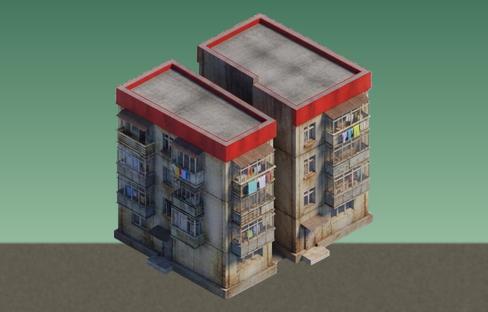
Housing District
+10 population limit each
6500 Food + 3400 Knowledge. The limit can go past the game's maximum of 200.
Mod pack for Rise of Nations: Extended Edition
A smoother camera, an interface that tells you more, a few rules that fix old annoyances, veteran ranks for units and towers, city districts that keep your empire growing in the end game, airdrops by helicopter, field fortifications and tank traps, cities that repair their own buildings, a Survival mode, the game in ten languages, Romania as a 25th nation, and a new look, from the launcher and the nation flags to buildings of their own for the Romans, Egyptians, Russians, Dutch, Persians and more.
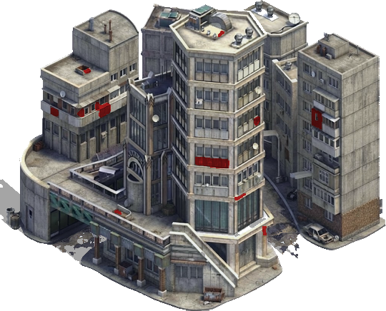
The mod sits next to the game. Nothing in the game's own folders is overwritten, so a Steam update or "Verify integrity of game files" never breaks your installation, and removing the files gives you the original game back.
RON_Revived-<version>.zip and extract all of it (right-click, Extract All). Do not run it from inside the zip.install.bat. It finds the game through Steam; if it cannot, it asks for the folder with riseofnations.exe.To update, install the new version the same way over the old one: your ron_camera.ini is kept, and the new defaults go next to it as ron_camera.default.ini. The installer keeps a copy of any game file it replaces and lists what it installed in RON_Revived_files.txt. It refuses to run while the game is open, or when another mod already uses winmm.dll: only one such mod can be installed at a time.
Updates from the launcher. When a new version is out, the game's launcher shows it over its picture, with how much there is to download and an Update button. It downloads only the parts of the pack that changed, checks that they arrived whole, installs them the same way install.bat does and starts the game again. Without internet, or with no new version, nothing shows (check=0 under [update] turns it off).
The pack's zip holds only what every player needs (about 35 MB). Optional content, such as the nation music (54 tracks, about 220 MB), comes from the Extras tray on the launcher's left edge: it looks like the front of a CD drive, with a light, how many extras you have of how many there are (for example 1/3) and a red badge with the news. Click it and the tray slides out from behind the launcher. Each extra has one button: Download, Installed (it says Remove under the mouse), Update when a newer version is out, and the download's progress (Cancel under the mouse). Every download is checked before it is installed; installed extras stay through updates of the pack, and the launcher's Update updates only the extras you have (tray=0 under [extras] hides the tray).
By hand: copy everything inside the zip's game folder into the game folder (in Steam, right-click the game, Manage → Browse local files) and merge the folders.
How it works. Windows loads winmm.dll from the game folder before its own copy. The mod's version forwards everything to the real one and adds its changes in memory while the game runs. New pictures and data are read from mod_override in place of the game's files. If the game is updated to a version the mod does not know, the mod switches itself off and the game runs normally.
Double-click uninstall.bat. It removes every file the installer put in (the list in RON_Revived_files.txt) and the logs, and puts back the game files it had replaced.
The mod writes what it did to ron_camera.log in the game folder, including any part it switched off; each game starts a new log, and the one before is kept as ron_camera.old.log. Send it along with a bug report. When the game starts, the mod checks the game version and every place it changes: if a game update changes something, only the affected part turns itself off and the rest keeps working. Some antivirus programs flag game mods that use winmm.dll by mistake; add the game folder to the exceptions if that happens.
Crash reports. If the game crashes, a panel opens: "Rise of Nations closed because of an error". Write what you were doing (optional), and your Discord name if you want to be asked more, then press Send report; the report goes to the RON Revived Discord, where the cause can be found and fixed. It holds where the game failed, the end of the mod's log, your Windows version and memory and a small memory dump of the game (a check box leaves it out); your Windows user name is taken out first, and See the report shows the text before you send it. The reports stay in the game's crash folder (the newest ten). crash_reports=0 under [debug] turns it off.
Slow late in big matches on a laptop? If it has two graphics cards, check that Windows runs the game on the fast one (Settings → System → Display → Graphics → Rise of Nations → High performance). On the integrated card the game can be several times slower.
The everyday improvements, in three groups. Each card says in two lines what it does; click it for the details.
Only your own screen changes, so these work in any game, with or without the mod on the other side.
Clearer detail and richer colour on the map, livelier water with sparkles and reflections; the interface stays as it is. Compare it in game with Ctrl+F10.
See Sharper picture and better water, with before and after pictures.
Diagonal scrolling is no longer 1.41 times faster than straight scrolling, and the keyboard plus the screen edge no longer add up to double speed. Acceleration and braking can be turned on.
The camera glides between zoom levels and the tilt follows gradually. The point under the cursor stays in place while you zoom (or you can zoom on the screen centre, or keep the game's behaviour). Turning the wheel several times in a row keeps the zoom flowing.
You can zoom out one step farther than before (the wider view the game keeps for replays) and in one step closer than the closest level. Up close, buildings are enlarged and look a little soft.
Jumping to an event or a hotkeyed group pans the camera instead of cutting to it.
The game placed buildings on whole pixels, so they shook against the terrain while zooming or scrolling. They now sit still, and they use smooth filtering while the camera moves (no shimmering pixels), going back to sharp at rest.
Zooming out no longer leaves part of the map, sometimes half the screen, as black ground until you move the camera.
On a map where one ground covers most of the view (a desert, for example), zooming all the way out could fill the screen with long black and sand-coloured streaks and make the game stutter. The game can draw only so many tiles of one ground at once, so the farthest zoom now stops just before that limit; on varied maps it goes all the way, as before.
The camera no longer keeps scrolling in one direction after Alt+Tab.
The arrow keys (and numpad 2/4/6/8) start and stop the camera the moment you press or release them. The game read the keyboard only once per game tick, so the camera started late and kept going for a moment after you let go (instant_keys).
Soft, round edges instead of the jagged tile grid, with a gradual fade at the edge of what your units see.
Units, ships and their shadows are drawn at their exact facing instead of the game's 256 steps, and aircraft turn smoothly between game ticks instead of snapping from angle to angle (smooth_facing). Confirmed in game.
Close up, the edge of vision showed small dark teeth, one per row of the ground's grid. Every row now gets the same blur and the fade is wider (fog_blur, fog_edge).
The white flash is full only when the blast is near the middle of your screen and fades with distance, instead of blinding you wherever it is. While a nuke flies, everyone sees the radiation sign over its target, its three blades closing in on the middle until the moment it lands, and the scorch and the fires stay three times as long.
The edge of vision no longer shows small dark teeth along the ground's triangles: the fade at the edge is even.
With the interface scaled up, shadows could stretch into long dark streaks across the ground. They now keep their normal shape.
On 1440p, 4K and high-resolution laptop screens the interface is no longer tiny. It follows the Windows display scale by default and is still drawn at full resolution. It works best in borderless window mode at your screen's native resolution. The mouse cursor keeps its original size.
The Conquer the World campaign map keeps the game's own camera; its battles use the new one.
Things the game knows but does not show you, and shortcuts for big armies. They only change the interface, so they are safe in multiplayer.
A row of icon buttons just above the bottom interface, at its left end, in this order. The Airbases and Docks buttons appear once you have built an Airbase or a Dock. With the interface theme they are round gold medallions (a tower, a plane, an anchor, a gear in laurels) that light up under the mouse. Hover any of them for help.
Selects every Barracks, Stable, Siege Factory and Airbase (Auto Plants and Factories in later ages), so you can train from all of them in one go.
Selects every military unit, dug-in soldiers included. The game allows 128 in one selection: with a bigger army, click again for the next 128.
Selects every Airbase. Build aircraft from all of them, or use the air commands at the bottom of the command panel to send every plane at once.
Selects every Dock (Anchorage and Shipyard in later ages) to build ships from all of them.
Opens the assistant panel. See AI assistant.
The panel in the top left is 25% larger, its rows a quarter wider, the income rates green, and the numbers drawn in a clear font instead of the game's tiny pixel one. Under each resource, a thin bar with one segment per place of work (farms, woodcutters, mines, oil wells, merchants, scholars), green for the ones in use, and the count ("7/7") at the end of the row, so you see at a glance where workers are missing.
The handle under the rows hides or shows the bars. The market opens to the right of the resources, its Buy (green) and Sell (yellow) buttons level with their resource, instead of pushing the whole panel aside. The population and city counters sit one under the other in the market's column. resource_bars=0 under [ui] brings back the game's panel.
With the bottom interface folded (its arrow button), the minimap moves to the top right corner of the screen, out of the way of your units. A round button in the corner switches it between small, medium and large; the size is kept for the next games. It sits in a riveted steel frame in the interface's style, with a domed bolt at each corner of its diamond.
The game's clocks (Armageddon, wonders, time limit, Survival) and the wonders being built line up under it, whatever its size. Unfolded, the minimap is back in its frame. minimap_top_right=0 under [ui] keeps it at the bottom right; minimap_frame=0 takes the steel frame off.
Selecting a unit or a building with the interface folded shows the full panel (name, hit points, attack, armor, range, the production queue) next to the command buttons, instead of the game's one-line strip. Several units or buildings show one picture per kind and how many of it are selected. Things that are not yours (an oil patch, a mine, ruins, an animal, another player's unit) show their panel too. Every match starts with the interface folded; its arrow button at the bottom right unfolds it as in the game.
folded_selection_panel=0 under [ui] brings back the strip; start_folded=0 lets the game remember your last choice.
With one unit selected, the right half of the selection panel shows the rank's insignia and name, its kills, the level and a large experience bar with how far the unit is to the next rank, and every bonus the rank gives now, one per line.
Every row of the game setup screen is a quarter taller, with larger text and nation flags; the drop-down boxes are a lighter grey and the Name, Nation and Difficulty boxes are centred.
Under [qol]: setup_centre=0 puts the text back on the left, setup_font_percent sets the text size (125; 100 = the game's).
The unit or building under the mouse gets the same mark as a selected one (the circle under a unit, the rectangle around a building): white for yours, yellow for allies, red for everyone else.
Hover over one of your buildings (or select it) while it trains a unit or researches, and a thin cyan bar under its health bar shows how far the job is.
A selected building of yours shows a dotted line on the ground, in your colour, from the building to its rally flag.
The game writes a price you cannot pay in red in the tooltip. Now it also says how much is missing, for example 120 (-45).
In single player, when the game has loaded, the loading bar turns into a glowing PLAY button, and the game starts only when you click it (or press Enter or Space). Read the loading screen (players, unique units, rules) for as long as you like.
While you place a building, the tiles of your territory around the cursor turn green where it fits and red where it is blocked by trees, resources, buildings, water or cliffs. It follows each building's own rules (a Dock needs water) and fades out towards the edge.
Select a Tower, Fort, City or any other building that shoots, and its attack range is drawn on the map as a semi-transparent circle in your colour.
Every command button with a keyboard shortcut shows its key in the corner, as in Company of Heroes 3. No more hovering to find out. If you change your keys in the options, the letters follow.
Command buttons work like the market's Buy / Sell: what you can click right now is lit and raised (a light top-left edge, a shadow bottom-right); what you cannot (not enough resources, no craft points, disabled) is darker and sunk into the panel. Locked options (wrong age, missing research) also show a small gold padlock. Unaffordable buttons stay clickable, so you can queue ahead.
Research keeps its own look (the flask). Under [qol]: button_depth=0 keeps only the darker colour, poor_button_percent sets how dark (40).
Select different military buildings together and train from one panel: infantry on the first row, cavalry and tanks on the second, artillery on the third, aircraft on the fourth. A click queues the unit in every selected building that can train it. The original game showed nothing.
Current and maximum hit points under the health bar of the selected unit or building, for example 1250/1500.
A selected or hovered squad shows a small health bar over each soldier, with that soldier's own hit points, so you see who is about to fall. The game showed one bar over the captain only (squad_health_bars).
Every health bar (units, buildings, squad soldiers) is 75 % larger, so it reads at a glance at every zoom. The rank insignia and the production bar follow it.
health_bar_percent under [qol] sets the size; 100 is the game's.
Generals, Spies, patriots and every other unit with craft points show a blue bar right under their health bar, so you see at a glance when an ability is ready (mana_bar).
With only Airbases selected, hold the right mouse button and drag: a red circle opens on the ground and the enemy targets in it get a red ring. Let go and each ready aircraft flies at one target, nearest to the centre first. Bombers take the buildings first, fighters the units. An empty circle sends every aircraft to patrol it; a plain right-click works as before (airbase_area_strike).
A painted skull and crossbones shows how many enemy units and buildings the selected unit or building has destroyed; the kill goes to whoever lands the final blow. Airbases and Carriers show the total of their aircraft. With soldiers selected, the top row of the selection panel shows the kills of the whole selection, large.
It counts from the moment you start the game, so a loaded save starts at zero.
Merchants that stand idle for a few seconds go and trade on their own, on the route the game itself would pick, as if you had right-clicked it.
Computer players are named after a leader of their nation (Julius Caesar, Queen Chabi, Napoleon, ...) instead of "Computer". In single player you see every computer's leader and nation from the start, on the loading screen and in the score list.
These change the game itself. In multiplayer every player needs the mod, with the same settings.
When the Armageddon clock reaches zero, the game no longer ends with everyone defeated. The game goes on, and from then on nobody can build or launch nuclear weapons.
A slider in the game setup sets how many nuclear weapons may go off: far left None (nobody can build Nuclear Missiles, ICBMs or Interceptors; Cruise Missiles stay), 1 to 250 for the Armageddon clock, with wider steps to the right, or far right Unlimited, with no clock at all. Right-click it for the game's own rule. In multiplayer only the host can move it.
Units in enemy territory without supply lose hit points 1.5 times as often, so armies deep in enemy land wear down faster and Supply Wagons, and raids on them, matter more. Supply Wagons, the supply technologies and nation bonuses reduce it as before.
A fishing boat left without a fish (two boats picked the same one, or ships block its way) looks for another free fish after a few seconds, instead of sitting idle for about a minute with the idle alarm ringing.
Every Tower, Keep, Stockade or Bunker you own adds 10 Wealth and 25 Metal to the price of the next one, as the game intends. In some games (an Information Age start, for example) the price never rose and the computer players covered the map with towers. Now all four levels count together, and the same for Forts, Castles, Fortresses and Redoubts (defense_ramp_whole_line).
In an "All Technologies" game the computer players (and the Cooperative AI building for you) also laid plain Towers among their Bunkers. They now build the newest level they have, the one your build menu shows, and the older levels are out of date for them as in a normal game (defense_build_current_level; in multiplayer every player needs the same setting).
Generals no longer have the Create Decoys ability, for anyone, computer players included. Decoys a scenario places do not count as kills.
Units, Spies, Generals and the buildings that shoot gain experience and rise through 10 ranks, each stronger than the last. It has its own section.
The Senator (patriot) can Bribe like the Spy, but the game gave it only the button. Now, as with the Spy, the cursor over an enemy unit it can bribe is the bribe cursor and a right-click bribes it.
With Cooperative AI on, "Teams of 2" (3, 4) no longer needs exactly 4 (6, 8) players. It asks what it asks without Cooperative AI: at least 3 (5, 7) players and no team bigger than 2 (3, 4).
Housing, Commerce and Industrial districts built next to your cities in the end game, as many as you can pay for. They have their own section.
A Large or Major City repairs the damaged buildings of its own city (and the wonders in its circle) by itself, one at a time, the most damaged first, paying like a Citizen: as fast as one Citizen for a Large City, two for a Major City. A building waits 45 seconds after its last hit. Small pliers with sparks float over the building being repaired. The Repair button on the city panel turns it off and on (city_repair).
Generals get a fifth ability in place of Create Decoys: for 5 seconds your units in the General's circle get back 25% of their hit points, for a full bar of craft points (key E). The healed units glow: green rings on the ground, a green halo and green crosses rising over their heads.
Missile Silos train Interceptors, up to 2 each, and fire one by themselves at an enemy nuke within 40 tiles: it leaves at once, flies 4 times as fast as the nuke and meets it high in the air with a small fireball, a faint light and its own sounds. A nuke shot down does no damage and does not count for Armageddon. A blast that goes off leaves a minute of radiation under a green haze. An air-raid siren sounds when an enemy launches. A selected silo shows its 40-tile interception ring.
Computer players (and the assistant playing for you) no longer make a crowd of Generals and Supply Wagons and no soldiers: one General per 20 army units, at most 3, and one Supply Wagon per 15, at most 4.
An Airbase used to launch one aircraft about every second, so strikes arrived one plane at a time and the anti-aircraft guns picked them off. Now they take off almost together (air_launch_frames).
Fallen soldiers, wrecks and the marks under them stay on the ground about a minute instead of about 9 seconds, and the map keeps up to 400 dead at once instead of 100, so even an 8-player battle does not wipe its dead early; tank wrecks block the ground for that long too (corpse_time_percent, corpse_limit).
Hold out for 30 minutes against waves from the fog. It has its own section.
A Chinook flies two squads of Paratroopers (6 soldiers) from your Airbase to any spot on the map. It has its own section.
Ranged infantry build their own cover and dig into it. It has its own section.
Steel obstacles on one tile that nothing gets through, built by Citizens in the Modern and Information Ages. See Tank Traps.
Units that fight earn experience and rise through 10 ranks. A veteran is worth keeping alive: a Brigadier General hits 40% harder, lasts 40% longer and takes a fifth less damage than a new recruit, and more besides.
xp_gain_percent).insignia_size).| Level | Rank | Insignia | Experience | Attack | Hit points | Also |
|---|---|---|---|---|---|---|
| 1 | Private First Class | bronze, 1 bar | 0.4 | +4% | +4% | |
| 2 | Corporal | 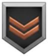 bronze, 2 bars | 0.9 | +8% | +8% | |
| 3 | Sergeant | 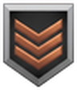 bronze, 3 bars | 1.7 | +12% | +12% | +1 line of sight |
| 4 | Staff Sergeant | silver, 1 bar | 2.6 | +16% | +16% | |
| 5 | Master Sergeant | silver, 2 bars | 3.9 | +20% | +20% | attacks 10% faster |
| 6 | Lieutenant | silver, 3 bars | 5.2 | +24% | +24% | 10% less damage taken |
| 7 | Captain | gold, 1 bar | 7 | +28% | +28% | +1 range (ranged units) |
| 8 | Major | gold, 2 bars | 9.1 | +32% | +32% | attacks 20% faster |
| 9 | Colonel | gold, 3 bars | 11.7 | +36% | +36% | heals 1% a second after 10 seconds out of combat |
| 10 | Brigadier General | gold, star | 13.9 | +40% | +40% | 20% less damage taken (instead of 10%) |
They have no weapon, so they learn from their abilities. A successful Bribe counts like destroying the bribed unit; every other ability that costs mana (a General's Ambush, Forced March, Entrench and Heal, a Spy's Counterintelligence and Informer) gives 35% of the unit's own cost per full mana bar. A General reaches level 1 after 2 abilities, level 9 after about 34 and level 10 after about 40. Attack bonuses do not apply to them; hit points, sight, damage taken and healing do.
Every building that shoots ranks up from the damage it deals: Cities, Towers and Forts in all their forms, Lookouts and Observation Posts, the air defence guns, the Red Fort and the Forbidden City. They get the same bonuses as units (no healing: repair them). Their experience is counted against at least 150 resources, so cheap Cities do not shoot up the ranks at once. A captured building starts again from no rank.
When a unit or a defensive building reaches a new rank, its insignia pops up over its head in a flash of the tier's colour, spins twice, stops facing you and fades, with a few sparks. You see every promotion you can see on the map (promotion_effect). The attack box of the selection panel now shows the rank's bonus too, for example "48+13".
ranks under [gameplay] in ron_camera.ini turns the ranks off; [ranks] holds the bonus per level, the healing, the experience rate and the experience of abilities and buildings. In multiplayer every player needs the same values.
The game can play your nation for you, but its computer player spends everything you have. The assistant settings tell it what it may buy and how much it must leave you.
Open the panel with the assistant button (the Senate icon) in the row of new buttons. The switch at the top hands your nation to the computer and takes it back: FULL CONTROL ticks every kind below and lets the computer play, NO CONTROL gives you your nation back. Untick some kinds while the computer plays and the switch reads CUSTOM. What the computer may buy:
Click anywhere on a row to switch it. The slider sets a reserve from 0 to 5000, in steps of 100, for all six resources: the assistant never buys anything that would take a resource below it. Click anywhere on the bar to set it. Changes apply at once and are remembered for the next game. Close the panel with X or with the button again.
One click. The switch does what the console commands computer YourName and human YourName do; they still work too.
It works in single-player games. In multiplayer the computer players run on every machine, so private settings would put the game out of step; there the assistant keeps the game's behaviour.
End-game growth for every nation: districts built next to your cities, each adding a bonus for as long as it stands, as many as you can pay for. They replaced the Data Center, which is no longer in the game.
| Districts | Rule |
|---|---|
| Where | From the panel of any of your cities (Small, Large or Major City), on a 2×2 plot next to that city or to one of its districts, with at most 2 empty tiles between them so units can pass. The town grows outward as a patch. |
| Who builds them | A District Builder comes out of the nearest city, builds every site you placed (Shift places several), one after the other, and goes back. He cannot be selected; if he is killed, the next one comes out 20 seconds later. |
| When | Once you have researched every Library technology up to the last Age of the game (the four last Information Age ones excepted). A game that stops at the Modern or Industrial Age gets them too. |
| How many | As many as you like: the bonuses add up, and each district of a kind you own makes the next one of that kind 5% dearer. |
| When lost | A destroyed or captured district takes its bonus with it. |
| Look | Grey communist blocks, a department store and a workshop, the same for every nation for now. |

+10 population limit each
6500 Food + 3400 Knowledge. The limit can go past the game's maximum of 200.
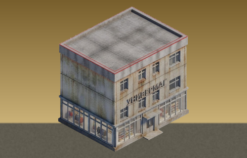
+30 resource-rate limit for every resource
3000 Knowledge + 3000 Wealth. The rate limit can go past the game's hard limit of 999; only resources already at their limit earn more right away.
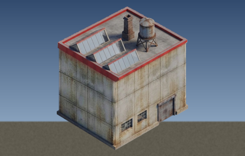
+3% to all resource income
3000 Knowledge + 2000 Wealth. Works even for resources already at their limit.
data_center.ini. Computer players do not build districts.A new ability for the Airbase, for taking cities faster on large maps: a transport helicopter flies an elite squad to the spot you choose, lands it and flies home.
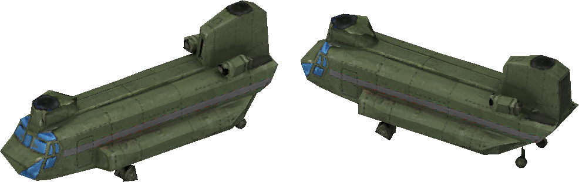
| Airdrop | Value |
|---|---|
| Available from | Modern Age, at the Airbase |
| Price | 400 Food + 350 Oil |
| Refund | A third, when the helicopter lands at its Airbase again |
| Cooldown | 45 seconds per Airbase |
| Troops | 2 squads of Paratroopers, 3 soldiers each (6 soldiers) |
| Paratrooper | Elite infantry, per soldier: 230 hit points, attack 30, armor 5, speed 38, range 13; can capture cities |
airdrop.ini. A helicopter still in the air when you save is gone after loading.A defensive position that ranged infantry build themselves and dig into, from earth banks and stakes in the Ancient Age to HESCO barriers in the Information Age.
| Field Fortification | Value |
|---|---|
| Size and price | 2×2 tiles, 60 Timber (more for each one you own) |
| Hit points | Half a Tower's of your age (375 / 500 / 650 / 850), plus the game's building bonuses |
| Dug-in bonus | +1 range, attacks 40% faster, +20% damage |
| Price of digging in | 35% of the squad's price, +10% for each squad you already have dug in, up to +150% |
| Looks | Earth bank and stakes (ages 1-3), gabions (4), stone battery (from 5), sandbags (7), HESCO barriers (8) |
The numbers can be changed in entrench.ini. The fortification takes the place of the scenario-only Lenin Statue.
Steel anti-tank obstacles on a single tile, for the Modern and Information Ages. Citizens build them from the military build menu, next to the Lookout.
| Tank Traps | Value |
|---|---|
| Size and price | 1×1 tile, 20 Metal (+5 for each one you own) |
| Hit points and armor | 1200, armor 8 (as a Redoubt) |
| Built by | Citizens, about 13 seconds for one |
| Ages | Modern and Information (7 and 8) |
They take the place of the scenario-only Washington Monument.
A new way to play: hold out for 30 minutes. The whole map is yours; the enemy comes in waves from the fog, one or two ages behind you.
Clocks at the top right show the time left to survive and the time to the next wave: yellow before a boss wave, red in the last 10 seconds.
No-build zone: a tenth of the map, on the side away from your start, where nobody can build, so the waves always have room to gather. Flags mark its edge.
A 25th nation, with its own flag, leaders, cities, nation power, unit names from Romanian history, its own unit icons and George Enescu's music.
Attrition damage to enemy units in your territory +100%, and the attrition research is free. +20% Oil gathering. Forts and Towers 25% cheaper; Forts 50% faster to build, +3 National Borders and their research free. The Militia, Minuteman and Partisan upgrades free.
Some Romanian units are an elite that costs more (Falxmen, Roxolani Lancers, Viteji, Vanatori de Munte); others are levies, reservists and older machines that cost less (Comati, Voinici, Darabani, Dorobanti, Automitraliera, Renault FT, R-2). The price follows the strength: every one of them gives the same strength for its resources as the usual unit.
Computer players are named after Burebista, Decebalus, Mircea the Elder, Vlad the Impaler, Stephen the Great, Michael the Brave, Queen Marie and others; cities from Bucuresti and Sarmizegetusa on. Enescu's Romanian Rhapsodies play among the game's tracks (the recording has to be added by hand, see the mod's README).
Every unit Romania fields (105 in all), by kind and age. Each number is compared with the average of the 24 original nations for the same unit in the original game (their own unique units included): green is better for you, red is worse; for Reload, Cost and Training less is better. The average is rounded to whole numbers (costs to tens, as the game keeps them) and differences under 3% count as equal, so only real differences show.
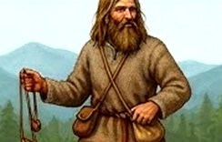
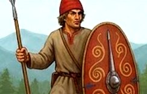
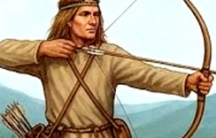
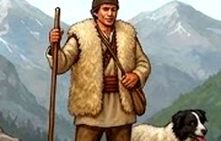
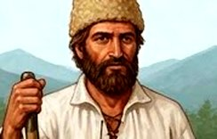
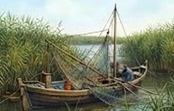
Light troops of the Dacian tribes.
Dacian tribal spearmen.
The Getae, the Thracian people of the Lower Danube, famous archers.
Watchman of the borders and the mountain passes.
Free peasant landholders of medieval Moldavia and Wallachia.
The learned man: monastery scribes, later the scholars of the Romanian Academy.
The Transylvanian Saxon merchants of Brasov and Sibiu, who carried trade over the Carpathians.
Merchant.
Fishermen of the Danube Delta.
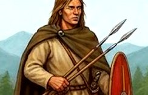
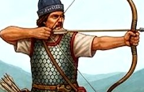
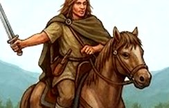
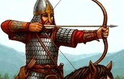
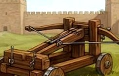
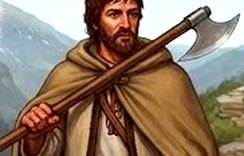
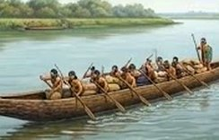
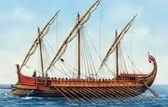
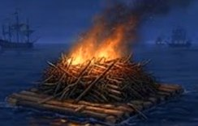
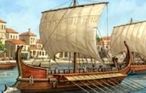
The long-haired Dacian commoners, who fought as skirmishers.
Dacian warriors with the falx, the curved two-handed blade the Romans feared.
Archers of the Dacian kingdom of Burebista and Decebalus.
Dacian light cavalry.
The Iazyges and Roxolani, the Sarmatian allies of the Dacians.
The armored Sarmatian lancers who rode with the Dacians.
Roman-style engines in Dacian service at Sarmizegetusa.
Free mountain men who guarded the Carpathian passes (plaiuri) for the voivodes.
Dugout boats of the Dacians on the Danube.
The war galleys of Byzantine Dobrudja.
Fire rafts of the Black Sea coast.
Tomis, today's Constanta.
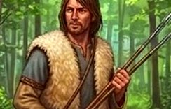
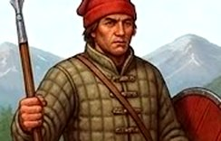
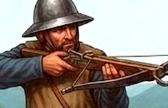
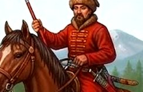
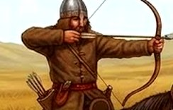
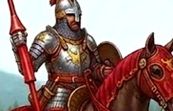
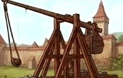
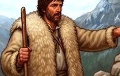
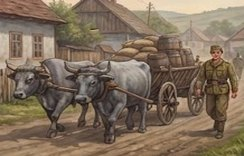
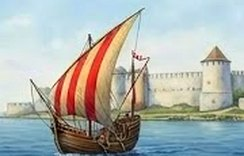
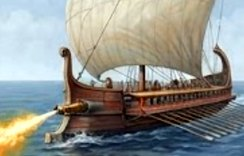
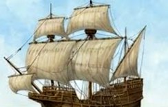
The light foot of the early Vlach voivodeships.
The foot soldiers of the voivodes' hosts in the age of Mircea the Elder.
The crossbowmen of the fortified Saxon towns of Transylvania.
The court cavalry of the voivodes, who held land for their service.
The Cumans, steppe horsemen who lived in Wallachia and Moldavia before the voivodeships.
The heavy cavalry of the boyars.
Siege engines of the Transylvanian towns.
Guide: the shepherds and hunters who led armies over the Carpathians.
The ox carts that supplied every Romanian army until the First World War; from the Industrial Age, when it becomes a truck, the DAC Truck.
The Genoese colonies of Chilia and Cetatea Alba.
The Byzantine fire ships of the Danube mouths.
The Genoese trading posts on the Danube mouths.
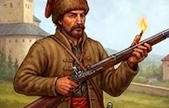
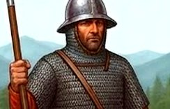
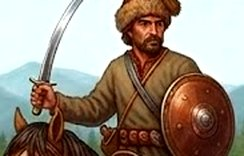
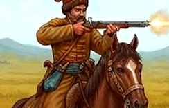
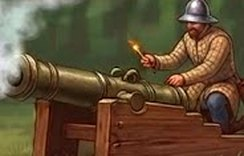
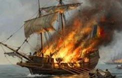
The paid foot soldiers with firearms of the 16th and 17th century voivodes.
Professional paid soldiers (lefa = pay) of Stephen the Great and Michael the Brave.
The light horsemen of Michael the Brave's age.
Mounted soldiers with firearms of 17th century Moldavia.
Stephen the Great's elite horsemen, ennobled for bravery in battle.
The medieval Romanian word for a bombard.
The Moldavian port of Chilia, taken by Stephen the Great.
The fireship of the age of sail.
Sailing warships of the Black Sea.
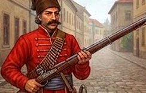
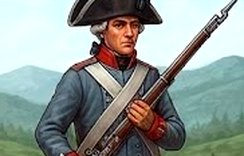
The musketeer mercenaries of 17th century Wallachia and Moldavia.
The Romanian border regiments of Transylvania (Nasaud, Orlat) in the 18th century.
"the red ones", the hussar regiments of the Romanian army from 1868.
The mounted guards of the 18th century Phanariot princes.
The Royal Escort Squadron of the Romanian kings.
The cannon of the voivodes and of 1821.
The irregular soldiers of Oltenia who rose with Tudor Vladimirescu in 1821.
The gunboats of the Romanian Danube flotilla of the 1860s.
The fireship of the age of sail.
The infantry of the War of Independence of 1877-1878 (Plevna, Grivita).
The vanatori de care, anti-tank teams of 1941-1944.
The machine gunners of the First World War (Marasesti, 1917).
The armored machine-gun cars of 1917.
The French light tank of the Romanian army's first tank regiment, from 1919.
The Krupp guns of the War of Independence and the First World War.
The reconnaissance soldiers of the First World War.
The 75 mm Vickers anti-aircraft gun bought in the 1930s.
The Romanian-built biplane of the 1930s.
The Romanian merchant fleet.
The Marasti class destroyers, ordered in 1913 and in service from 1920.
The first Romanian submarine, 1936.
The river monitors of the Romanian Danube flotilla (1907).
The light infantry regiments of the World Wars.
The Panzerfaust, the anti-tank weapon of the Romanian infantry in 1944.
The Czech ZB-53 heavy machine gun of the Romanian army in the Second World War.
The Romanian-built eight-wheeled armored personnel carrier.
The Czech-built LT vz. 35, the tank of the 1st Armored Division in 1941-1942.
The Skoda howitzers of the Second World War.
The Vanatori de Munte commando companies of the Second World War.
Outlaws of the forests who fought the Ottomans and the boyars; the name of the anti-communist mountain fighters too.
The Romanian-built fighter of the Second World War.
The Savoia-Marchetti bomber built under licence in Brasov.
The 88 mm guns that defended Ploiesti in 1943-1944.
The dive-bomber version of the IAR-80.
The Alouette III built under licence in Brasov.
Hermann Oberth of Sibiu, a father of rocketry.
The destroyers of the Second World War Black Sea fleet.
The monitor Mihail Kogalniceanu.
The 26th Infantry Battalion "Neagoe Basarab", the Scorpionii Rosii.
The 9K11 Malyutka anti-tank missile of the Romanian army.
The PKM general-purpose machine gun of the Cold War army.
The Romanian-built infantry fighting vehicle.
The Romanian main battle tank.
The Romanian-built multiple rocket launcher.
"The Eagles", the 1st Special Operations Battalion of today's Romanian army.
The Romanian upgrade of the MiG-21.
The fighter of today's Romanian air force.
The Cold War jet bomber of the Romanian air force.
The Romanian-built anti-aircraft missile vehicle.
The Romanian-Yugoslav jet attack aircraft.
The stealth fighter ordered by Romania.
The Puma built in Brasov, in its attack version.
The Romanian-built frigate of 1985.
The Kilo class submarine Delfinul, 1985.
The frigate Regele Ferdinand of today's navy.
The war leader of Wallachia and Moldavia, prince and commander of the host.
The medieval Romanian word for a spy sent ahead of the host.
Dugout boats of the Dacians.
Histria, the Greek colony on the Romanian coast.
Vlad III Dracula, voivode of Wallachia.
Statesman of the Union of 1859 and of independence.
The first king of Romania.
The diplomat of the League of Nations.
The game and every mod in ten languages: the game's own English, German, Spanish, French and Italian, and five new ones, Russian, Brazilian Portuguese, Polish, Turkish and Romanian.
Click the round flag under Workshop: the other languages open around it like a flower. Pick one and the launcher's buttons change at once and the game starts in that language. Try it on the launcher below.
Options > Player > Language lists all ten. The game may need a restart after a change.
Every menu, button, name, message, scenario text, tooltip and encyclopedia page. Short texts were measured in the game's own font and shortened where they were wider than the game's own translations.
The new buildings and units, the nation powers, the assistant panel, the ranks, the button tooltips and the PLAY button show in your language. Before, playing in German, Spanish, French or Italian lost most of the mods' texts.
more_languages=0 under [ui] keeps only the game's five; language_button=0 removes the flag from the launcher.
A steel interface theme, from the launcher to the dialog boxes.
[launcher] in ron_camera.ini).The map, units and buildings look clearer and less washed out, and seas, lakes and rivers come alive. The interface is not touched: the new code runs in the game's own last picture passes, before the interface is drawn. Drag the line over a picture to compare.
[graphics] in ron_camera.ini (see Settings). Sharpening needs the game's Anti-Aliasing on, which is the default.These nations now get buildings of their own instead of the ones they shared with others. Pick a nation to see its buildings. Every other nation keeps the original art.
Romania's communist era for the Modern and Information Ages and its towns of 1900, the Aztec temple and a new Auto Plant for every nation. Scroll sideways for all of them.
The Romans get their own buildings, through the ages from wooden camps to modern Rome. Red banners and flags show each player's colour.
Each player's buildings follow that player's own age, so a Roman computer player that is behind shows its older city. On winter maps the Roman buildings are shown without snow for now.
In the first three ages the Egyptians used to share their buildings with the Aztecs, the Turks and seven other nations. Now they build mud-brick towns, painted pylons, obelisks and papyrus columns of their own. Red bands, cloths and small flags show each player's colour.
More Egyptian buildings, and later ages, are on the way.
The Russians used to borrow Greek temples in the first ages and the castles of the British, French, Germans and Dutch later on. Now they grow from a log village of ancient Rus to white-stone towns with onion domes. Red bands and cloths show each player's colour.
In ages 1-3 every Russian building, the game's own Granary, Lumber Mill, Smelter, Siege Factory, Dock, Mine, Woodcutter and Lookout included, now has one warm brown tone, and none has a ground shadow.
The Mongols used to live in Chinese towns. Now they start out in a camp of felt yurts on the steppe. Red bands and felt doors show each player's colour.
More Mongol buildings are on the way.
In the first three ages the Nubians used to share their buildings with the Aztecs, the Turks and seven other nations. Now they get the steep pyramids of Meroë, the capital of the kingdom of Kush.
More Nubian buildings are on the way.
In the first three ages the nations of northern Europe used to build Greek and Roman towns. Now the British, Germans and Dutch share a set of their own, from half-timbered villages with thatched roofs onwards; the French have their own set. Red bands and cloths show each player's colour.
More buildings for these nations are on the way.
In the first three ages the French used to share their buildings with the British, Germans and Dutch, and borrow Greek columns for the rest. Now they build a medieval France of their own: half-timber on stone, mossy shingle roofs, a Romanesque village church. Red bands and cloths show each player's colour.
More French buildings, and later ages, are on the way.
Beyond the northern European set they share with the British, French and Germans in the first ages, the Dutch now get buildings of their own: a Golden Age church for ages 4-8, and a 1930s concrete tower and casemate fort for the modern ages. Red bands and cloths show each player's colour.
More Dutch buildings, starting with the Golden Age market and dock, are on the way.
Until age 4 the Americans used to build Greek temples. Their own buildings begin with the colonial age: a building appears only in the ages where it makes sense.
More American buildings are on the way.
In the first three ages the Persians used to share their buildings with the Aztecs, the Turks and seven other nations. Now they get a Zoroastrian fire temple and the palace of Persepolis. Red bands and cloths show each player's colour.
More Persian buildings, starting with a Sasanian palace for age 3, are on the way.
The Spanish used to share every building with the Greeks and Romans. Their own begin with the seat of government of the Golden Age. Red bands and cloths show each player's colour.
More Spanish buildings are on the way.
Romania started out with the northern European buildings. Now it gets its own, from the Dacian hill forts to the concrete line of the Second World War, the Neo-Romanian towns of 1900 and the grey blocks of the communist era. Painted red bands and cloths show each player's colour.
The communist buildings of the Modern and Information Ages share one grey colour grade. The cities and the Auto Plant keep the same communist look in the Information Age. More Romanian buildings are on the way.
The Aztecs shared their early buildings with the Egyptians, the Turks and others. Their own begin with the temple.
More Aztec buildings are on the way.
Buildings that change for every nation that has no look of its own for them.
Open ron_camera.ini in the game folder with Notepad. 1 turns a feature on, 0 off. Most changes apply the next time you start the game; the assistant settings apply while you play.
| Setting | Section | What it does |
|---|---|---|
postfx, compare_keys | graphics | The sharper, richer picture and the Ctrl+F9 / Ctrl+F10 keys (postfx=0 = the game's own picture) |
sharpen, vibrance, contrast, warmth, black_level, vignette | graphics | How strong each part of the new picture is (0 turns that part off) |
fix_fxaa | graphics | The game's anti-aliasing works with bloom off |
water, water_reflections, water_glints, water_sky, water_waves | graphics | The better water, its reflections, sparkles, sky light and wave height (water=0 = the game's own water) |
smooth_scroll | camera | Smooth scrolling with even diagonals |
scroll_accel_ms, scroll_decel_ms | camera | Time to reach full speed and to stop, in milliseconds (0 = instant) |
scroll_speed, vertical_speed | camera | Scroll speed on top of the game's setting; vertical speed relative to horizontal |
smooth_zoom, zoom_smooth_ms | camera | Smooth zoom and how long one zoom step takes |
zoom_to_cursor | camera | 1 = towards the cursor, 0 = the game's way, 2 = screen centre |
pan_smooth_ms | camera | Length of smooth camera jumps |
zoom_tilt, zoom_linear_filter, subpixel_sprites | camera | Gradual tilt, smooth sprite filtering and steady buildings while zooming |
fix_stuck_keys | camera | Stuck camera fix after Alt+Tab |
instant_keys | camera | The arrow keys move the camera the moment they are pressed (0 = the game's delay) |
ui_scale | ui | auto follows Windows; 1 = off; 1.25, 1.5, 2 = fixed size |
smooth_fog, fog_blur, soft_edge, fog_edge | fog | Smooth fog of war, its roundness and the width of the fade |
build_grid, grid_radius, grid_alpha, grid_line | grid | Build grid, its reach in tiles, opacity and line width |
buttons | qol | The row of new buttons |
auto_trade, auto_trade_delay | qol | Auto-trade and how many seconds a merchant waits |
command_panel | qol | Mixed building selection, padlocks and the raised / sunk buttons |
button_depth, poor_button_percent | qol | The raised / sunk button edges, and how dark an unaffordable button is (40 %) |
show_hp, show_kills, show_hotkeys | qol | Hit point numbers, kill counter, hotkeys on the buttons |
hotkey_font_size, hotkey_bold | qol | Size and weight of the hotkey letters |
hud_scale, green_rates | qol | Size of the numbers on the resource panel, and green income rates |
resource_bars, minimap_top_right, folded_selection_panel | ui | The worker bars in the resource panel, the minimap in the top right corner and the full selection panel with the interface folded |
setup_centre, setup_font_percent | qol | Centred text and text size on the larger game setup screen |
notices_top, notices_leave_top | ui | Where the big announcements appear (pixels from the top; 0 = the middle, as in the game) and whether they leave along the top |
range_circles | qol | Attack range circles for selected buildings |
ai_leader_names | qol | Leader names for computer players |
reveal_ai_players | qol | Show computer players' leaders and nations from the start (single player; 0 = "Computer" until met) |
nation_flags, nation_grid | qol | Nation flags on the game setup screen, and the nation picker as flag cards |
no_armageddon, no_nukes_option, attrition_percent, fishing_retry, ranks | gameplay | The game rules above (attrition_percent=100 is the game's attrition) |
city_repair, city_repair_wait | gameplay | Cities repairing their buildings, and how many seconds a building waits after its last hit |
defense_ramp_whole_line | gameplay | Towers and forts priced by all the levels you own together (0 = the game's count) |
corpse_time_percent, corpse_limit | gameplay | How long the dead stay (667 = about a minute, 100 = the game's time) and how many the map keeps |
check | update | The launcher looks for a new version |
tray | extras | The Extras tray in the launcher |
crash_reports | debug | The crash report panel |
senator_bribe_hotkey | qol | The Senator's Bribe on the Spy's Bribe key |
attack_percent_per_level, hits_percent_per_level, heal_percent_per_second, heal_after_seconds | ranks | The veteran ranks' bonuses |
economy, military, research, expansion, wonders, reserve | assistant | The AI assistant settings (also changed from its panel) |
data_center.ini holds the city districts' bonus values and their rules (gap, need_last_age). [launcher] in ron_camera.ini holds the launcher's button sounds (hover_sound, click_sound, sound_volume), [heal] the General's Heal (percent, seconds, hotkey).
Camera, graphics, the new look and the interface helpers change only your own screen. Auto-trade and training from a mixed selection send the same orders you could give by hand.
The game rules, the city districts, Airdrop, the Survival script, Romania and the new nation buildings change the game itself. Every player needs the same version of the mod and the same settings, or the game goes out of sync.
Everything added or changed, newest first. Click a day to open or close it.
health_bar_percent).install.bat and uninstall.bat; updates keep your settings.balance.xml (Heavy Infantry, cavalry, elephants, ships, aircraft...) as 100 %. They count again, as in Thrones and Patriots.command_panel=0 no longer turns off the hotkeys and marks on the buttons; the interface scale resets on a resolution that needs none; the larger resource numbers work with the interface at 100 %; the log starts new each game.fog_blur, fog_edge and auto_trade_delay were ignored; they work now.